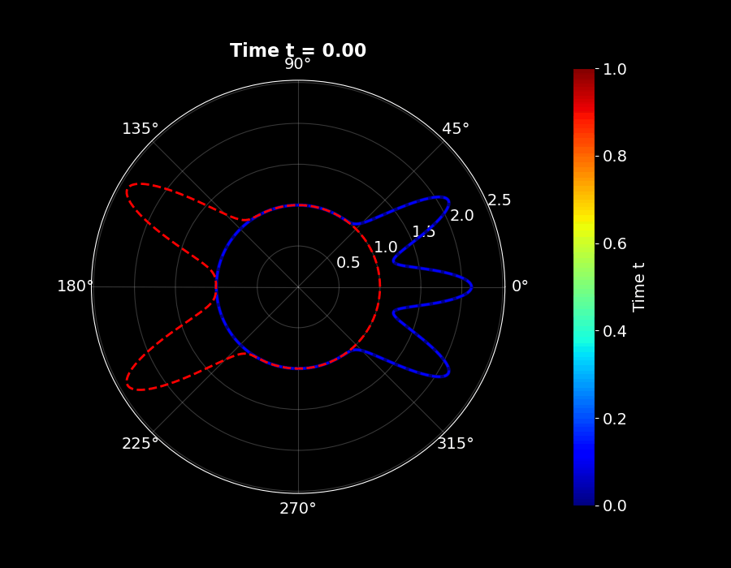
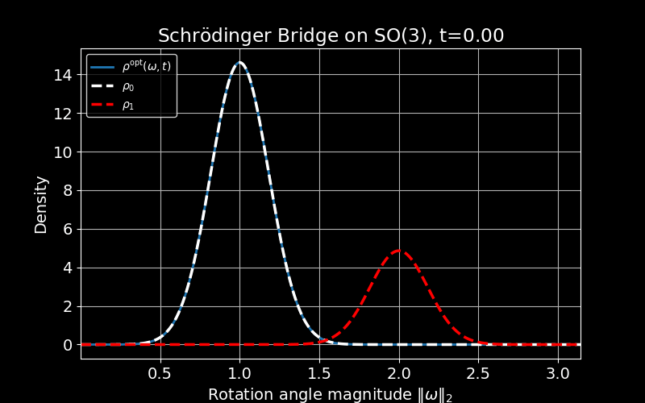

Schrödinger Bridge Over A Compact Connected Lie Group
Schrödinger Bridge Over A Compact Connected Lie Group
A geometric coordinate-free solution for the isotropic Schrödinger bridge problem over Lie groups .
Hamza Mahmood*, Abhishek Halder†, Adeel Akhtar*
* Department of Mechanical and Industrial Engineering, New Jersey Institute of Technology, Newark, NJ, †Department of Aerospace Engineering,
Iowa State University, Ames, IA
Snapshots of probability density function on SO(2) taken at five different time instances.
Abstract
This work studies the Schrödinger bridge problem for the kinematic equation on a compact connected Lie group. The objective is to steer a controlled diffusion between given initial and terminal densities supported over the Lie group while minimizing the control effort. We develop a coordinate-free formulation of this stochastic optimal control problem that respects the underlying geometric structure of the Lie group, thereby avoiding limitations associated with local parameterizations or embeddings in Euclidean spaces. We establish the existence and uniqueness of solution to the corresponding Schrödinger system. Our results are constructive in that they derive a geometric controller that optimally interpolates probability densities supported over the Lie group. To illustrate the results, we provide numerical examples on $\mathsf{SO}(2)$ and $\mathsf{SO}(3)$.
Animations

SBP on SO(2)
The initial PDF has three peaks while the terminal PDF has two peaks. The evolution of the intermediate PDFs illustrates how the three peaks smoothly redistribute to become two under the Schrödinger bridge dynamics on SO(2).

SBP on SO(3)
The above shows the computed \( \rho^{\mathrm{opt}}(\cdot,t) \),
for \( t \in (0,1) \), supported on \( \|\omega\|_2 \).
The boundary densities \( \rho_0 \) and \( \rho_1 \) are shown
in dashed white and dashed red, respectively. The figure also
illustrates the convergence of the Sinkhorn recursion with
respect to the Hilbert metric \( d_H \). This shows the smooth evolution of optimally controlled probability density function.
After cloning the repository, install the required Python dependencies using
pip install -r requirements.txt. Each experiment can then be executed
directly from the command line using Python. For instance,
python schrodinger_bridge_so2.py runs the SO(2) simulation, while
python schrodinger_bridge_so3.py runs the SO(3) simulation.
All generated figures and animation outputs are saved automatically in the
assets/ directory.